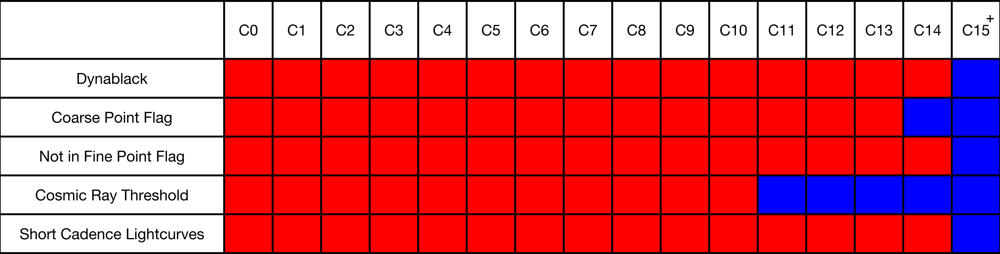
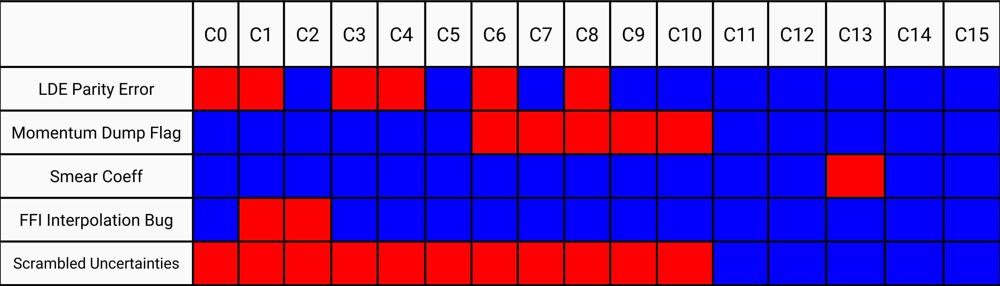

The K2 mission has begun a global reprocessing of the C0–C14 K2 data with an updated, uniform version of the Kepler/K2 pipeline. C15 and later campaigns will be processed with the same pipeline version. This effort should enhance the scientific return of the K2 mission by providing users with a high quality, uniformly processed and documented K2 dataset. This work will be performed on a best-effort basis as long as mission resources are available to do so — there is no guarantee that the Mission will able to reprocess every old campaign. The campaigns have been prioritized by enhanced scientific return as a result of reprocessing. Note that processing and delivery of new campaigns (e.g., C16, C17, etc.) will always be prioritized over reprocessing of older campaigns.
Current Priority of Older Campaigns: C2, C13, C0, C11, C1, C3, C4, C5, C6, C7, C8, C9, C10, C12, C14. (Not guaranteed to be actual order delivered due to processing constraints.)
All data will be delivered to the K2 data archive at MAST as it is reprocessed, where the reprocessed data for a given campaign will replace the older processing when searching for data via MAST's K2 Data Search and Retrieval page and any other interfaces. The older data will remain available to users via a subdirectory in the MAST browser interface.
Changes
The list of pipeline changes have been grouped into two categories: Major and Minor. The Major changes affect the data at a significant level and/or are applicable to the vast majority of campaigns. The minor changes affect the data at a much less significant level and/or are applicable to only a small number of campaigns. At the end of each category a graphic is shown that visually demonstrates which campaigns are affected (or will be affected) by each change.
Major Changes
Dynablack
A feature of the Kepler pipeline that was used during Kepler prime processing, but until now had not been implemented for K2, is the use of Dynamic Black Correction, or "Dynablack", which is essentially a more sophisticated algorithm to perform the CCD pixel-level calibration that accounts for time varying, instrument-induced artifacts in the pixel data.
Dynablack uses the full-frame images and collateral pixels to provide two main benefits compared to traditional pixel calibration:
-
Correct thermally dependent fine guidance sensor crosstalk pixels.
-
Identify rolling-band artifacts (see §6.7 of the Instrument Handbook) with flags in the target pixel files.
Users can track rolling-band artifacts using the new RB_LEVEL flags in the FITS files. See §A.1.1 of the Kepler Data Release 25 Notes and §2.3.2 of the Kepler Archive Manual for information on how to interpret and utilize the RB_LEVEL flags. In-particular, users should note that the RB_LEVEL test at the two shortest durations, 3 cadences (1.5 hours) and 6 cadences (3 hours), is overly sensitive to instrument noise and does not offer a reliable indicator of the presence of rolling band pattern noise. Because the binary "Rolling Band Detected" QUALITY and SAP_QUALITY flags (bits 18, 19) in the target pixel files and light curve files are based on a rolling band detection at any of the test durations (indicated by the keyword RBTDURi), they also do not provide a reliable indicator of the presence of rolling band pattern noise. The RB_LEVEL flags at durations greater than 6 cadences (3 hours) provide the best indication of the presence of rolling band artifacts.
As shown in Figure Major-Proc-Status, Dynablack was never implemented for campaigns prior to C15, but will be implemented during the global reprocessing for old campaigns, as well as for new campaigns.
Not in Fine Point Flag
Throughout K2, software on-board the spacecraft would record when it considered itself not in fine point. The pipeline would flag these cadences as "Spacecraft is not in fine point" (QUALITY flag bit #16, decimal=32768) and the data would be gapped in both PA and PDC lightcurves. Starting with C14, a change in the on-board software resulted in additional cadences being flagged as "Spacecraft is not in fine point" (QUALITY flag bit #16, decimal=32768). Especially after this change, but also before, it was noticed that the "Spacecraft is not in fine point" flag was set on cadences that actually contained good data where the spacecraft pointing was acceptable for science observations.
As shown in Figure Major-Proc-Status, the "Spacecraft is not in fine point" flag (QUALITY flag bit #16, decimal=32768) was used for all campaigns prior to C15. Starting with C15 and reprocessed campaigns, it is now ignored in the pipeline. See the next section, "Coarse Pointing Flag", for how cadences with poor pointing are now appropriately handled in the pipeline.
Coarse Pointing Flag
For C15+ and the global reprocessing, the pipeline is now using the "Spacecraft is in coarse point" flag (QUALITY flag bit #3, decimal=4) to identify cadences with significant pointing error. This flag is set by the mission based on the measured pointing error (using high-frequency sub-cadence telemetry) exceeding 1.5 pixels for 4 or more continuous cadences, or exceeding 2.5 pixels for a single cadence. The pipeline will treat these "coarse-point" cadences by gapping them in the PDC lightcurves for the flagged cadences. The mission has found that implementing this flag significantly improves the measured precision of the PDC lightcurves, both as a result of eliminating flux outliers due to poor pointing and PDC being able to focus more of its detrending power on correcting broad systematics and not single outliers. The mission recommends that starting with C15, users look to QUALITY flag bit #3 as an indicator of poor spacecraft pointing.
As shown in Figure Major-Proc-Status, the coarse point flags were implemented starting with C14 and all new campaigns, and will be implemented for all reprocessed past campaigns.
Cosmic-Ray Threshold
The Kepler pipeline employs an algorithm to detect when cosmic rays impact the collateral area of the CCD, used to calibrate the pixel-level data, and correct for the cosmic rays so that the data are properly calibrated. The original Kepler pipeline was not designed to work with significant (> 1 pixel) motion, especially in the presence of very bright objects, which are both common to K2. As a result, it was noticed that the cosmic ray detection algorithm was sometimes falsely triggering, which resulted in an artificial suppression of the collateral smear data, and thus an under-correction of all pixels in an affected column. The net effect is the presence of bright columns in affected cadences (examples can be seen in the C8 data release notes under 'Intermittent Streaks'). This effect was not noticed to be significant until many campaigns had been processed, and varies significantly per campaign and channel.
After investigation, the mission determined the most effective course of action was to raise the threshold of the collateral cosmic ray detector from 4σ to 7σ, which struck a balance between minimizing false detections while still detecting and correcting for significant, real cosmic ray events. This should improve photometric precision by reducing the number of flux outliers in the lightcurves.
As shown in Figure Major-Proc-Status, the cosmic ray threshold was set to 4σ for C0–C10 and 7σ for C11 and all newer campaigns. The threshold will be set to 7σ for all new campaigns and reprocessed past campaigns.
Short-Cadence
The Kepler pipeline corrects short-cadence PA lightcurves by interpolating from the long-cadence cotrending basis vectors (CBVs) that are produced as a result of long-cadence PDC. This method was not designed with the significant motion and resulting systematics that arise in K2 data, and as a result does a poor job of detrending K2 short-cadence data. For this reason, beyond an initial inspection based on C2, the mission did not attempt to produce short-cadence K2 light curves as part of its processing for C0–C14, as shown in Figure Major-Proc-Status.
As part of the global reprocessing effort, the mission revisited the prospect of producing short-cadence light curves by doing so for C15. In consultation with the community, the mission decided that despite the overall poor detrending, there was value in having short-cadence light curves available for at least an initial inspection, especially given that currently short-cadence light curves are not produced for most short cadence targets as part of the community-delivered high-level science products. The hope is that these pipeline short-cadence light curves may be used for initial inspection of the short-cadence data, which might prompt users to perform their own short-cadence detrending, or better adapt the existing long-cadence Cotrending Basis Vector (CBV) files for use in detrending the short-cadence data.
Starting with C15, as well as for all reprocessed data, an attempt to produce and deliver short-cadence light curves will be made — if significant issues arise in producing them for any campaign though, their production for that campaign may be abandoned in order to proceed with processing in a timely manner. Users are again strongly cautioned that no work was done to adapt the Kepler pipeline's detrending module (PDC), developed for Kepler data, to work well on short-cadence K2 data. Thruster firings are especially poorly corrected for most short-cadence targets, and other systematic features may not be corrected well. See Figure C15-SC-Example-1 in the C15 data release notes (under the section 'Short Cadence Light Curves') for an example of remaining systematics in short-cadence data around thruster firings. However, some targets do have adequate detrending in short-cadence, and even in the cases of poor detrending, short-term astrophysical variation can be seen for targets where such astrophysical variation exists. See Figure C15-SC-Example-2 in the C15 data release notes where the ~18 min periodic variations of the AM CVn type binary HP Lip are readily apparent in the C15 short-cadence light curve. It should also be noted that short-cadence lightcurve production will be performed at a low-priority, best-effort basis, such that if any errors occur when processing the short-cadence light curves, the mission will not expend resources to do so if it affects the ability to process long-cadence data for other campaigns.
Red indicates the final processing setting is *not* yet implemented in currently available data as of April 27, 2018.
Blue indicates the final processing setting has been implemented in currently available data as of April 27, 2018. 
{kind=link}
Minor Changes
LDE Parity Error flag
An 'LDE Parity Error' flag is set on-board the spacecraft for all targets when a bright object on that channel bleeds into the serial readout register area of the CCD and results in an out of bounds value in the analog-to-digital converter. Since this was an extremely rare event during the Kepler mission, the pipeline was set to discard all cadences flagged as 'LDE Parity Error' in both the target pixel and lightcurve files for all targets. With K2, there are many bright stars, and bright, moving planets that occur in several campaigns. This results in the 'LDE Parity Error' flag being tripped for multiple cadences in several campaigns. Specifically, 1,237 cadences are flagged in C2 most likely due to the Kp~4 star EPIC 205283834, 128 in C6 most likely due to Spica, 148 in C11 most likely due to Saturn, and between 2–11 cadences in all other campaigns. Inspecting the cadences, the actual data was found to not exhibit any defects, and thus these cadences should ideally not be discarded.
As shown in Figure Minor-Proc-Status, the pipeline was set to discard cadences based on the 'LDE Parity Error' flag for C0, C1, C3, C4, C6, and C8. No ill effects were seen in the other campaigns when the pipeline was set to ignore the flag. Thus, for C15 and all future campaigns, as well as all reprocessing, the pipeline will continue to ignore the flag, which will result in more cadences with good data available to users.
Momentum Dump Flag
A 'Momentum Dump' flag is set on-board the spacecraft for all targets when the spacecraft initiates a momentum dump (a.k.a. a 'Re-Sat'). This happens about every 2 days as part of normal K2 operations to maintain spacecraft pointing with two reaction wheels. During this time, the spacecraft can move up to half a degree within a cadence, which will significantly affect the ability to measure accurate photometry during an affected cadence. The Kepler pipeline is nominally set to discard cadences flagged as 'Momentum Dump' in both the target pixel and lightcurve files.
As shown in Figure Minor-Proc-Status, the pipeline utilized the 'Momentum Dump' flag for C0–C5 and C11–C15. For C6–C10, the mission experimented with setting the pipeline to ignore the flag, as there was a possibility that some of these flagged cadences did not have significant motion and might produce accurate photometry. However, upon examination based on the C6–C10 data, the mission found that indeed these flagged cadences should be discarded and accurate photometry was not able to be recovered for them. Thus, for C15 and all future campaigns, as well as all reprocessing, the pipeline will discard cadences flagged as 'Momentum Dump' (QUALITY and SAP_QUALITY bit #6, decimal value = 32) in both the target pixel and lightcurve files. This will result in ~40 less cadences for C6–C10, but likely improved light curves as PDC will be able to better detrend the data without have to spend power on correcting flux outliers as a result of the momentum dumps.
C13 Smear Coefficient
In C13, the 1st magnitude star Aldebaran on channel 73 bleeds heavily into the serial register of the CCD, corrupting the first three rows of the masked smear region. While these rows are not used for the smear correction, at times during C13 the saturation spill covered more rows in the masked smear, extending up to row 15 on channel 74 (see figure Aldebaran in the C13 data release notes under the section 'Smear Correction Error on Channel 74'). Trailing black rows 7-18 are fit with a linear model to estimate the black (bias) level for the masked smear region. At these times, the trailing black estimate for the masked smear signal was corrupted, resulting in corrupted black and smear measurements for the affected cadences. Since the black signal is subtracted from all the pixels in the channel, all targets on channel 74 were affected for these cadences, resulting in light curves that show significant chatter in baseline flux level for affected cadences. The black and smear corruption effects were most prominent in the first 80 cadences of the campaign and again in the period between cadence 1800-3200 (see Figure Channel 74 Trailing Black in the C13 data release notes under the section 'Smear Correction Error on Channel 74'). The net effect is to render the data for targets on channel 74 in C13 nearly unusable for science study (without significant work by users to recalibrate the pixel data).
As shown in Figure Minor-Proc-Status, this effect is unique to C13. When C13 is reprocessed, the black level model coefficients for channel 74 will be manually set to reasonable values for all cadences, thus producing nominal data for all targets on channel 74.
FFI Interpolation Bug
When there are more than one FFIs in a given campaign, the Kepler pipeline interpolates data between those FFIs, and extrapolates before and after each, to account for variations over time when calibrating the pixel-level data. A bug was discovered where FFIs from later campaigns were used to interpolate for calibration of the current campaign. Since there are usually two FFIs per campaign, taken ~1/3 and ~2/3 the way through, this bug affected the pixel-level data (and thus lightcurves and other products as well) for the last ~1/3 of a campaign, where the interpolation was between the last FFI of the current campaign and the first FFI of the next campaign (with a different field-of-view). The latest cadences of the campaign are affected the most. The exact impact of the effect is not known, but is thought to be small given that the FFI data are only used to supplement the undershoot correction in calibration and the interpolation will weight the FFI values towards the correct campaign.
As shown in Figure Minor-Proc-Status, because campaigns were predominately processed in the order they were observed, this bug only affected C1 and C2, which were processed when FFIs for later campaigns were already ingested. The bug has been fixed in the pipeline code and so C1 and C2, as well as any other campaigns, will not suffer from it when reprocessed.
Scrambled Uncertainties
A bug in the Kepler pipeline was discovered that caused the uncertainties on the smear calibration data for each column to be randomly scrambled, i.e., while each column's smear value was correct, it had a random uncertainty from another column, which can vary by ~20% column-to-column. When these uncertainties are propagated into the pixel-level flux value uncertainties, it results in incorrect flux uncertainties on the level of ~0.3%. The biggest impact this has is on the selection of the optimal photometric aperture, the algorithm for which is known to be overly sensitive to the uncertainties. Tests performed by the mission with the bug present versus the bug fixed confirm that while the bug had no significant effect on overall photometric precision, it did cause a significant change in the photometric aperture selected for a small number of targets.
As shown in Figure Minor-Proc-Status, C0–C10 were affected by this bug before it was detected and corrected, and thus will not contain the bug after when they are reprocessed.
Undelivered Targets
During the initial processing for three campaigns there were various reasons that some targets did not have target-pixel and/or light-curve data delivered. For C2, no lightcurves were delivered as the Kepler pipeline had not been fully adapted to work for K2 at the time, and until the code was finalized, it was deemed best to just produce target pixel files. For C2, C11a, C11b, and C14, there were 2–3 targets each that had an error when computing their centroids such that no WCS information was available and a FITS file could not be created for those targets, and thus no target pixel files nor lightcurves were delivered. For C11b, there were 191 targets that did not have delivered target pixel files or lightcurves due to a bug in how the pipeline FITS file creator was configured to run.
As shown in Figure Minor-Proc-Status, only C2, C11, and C14 had undelivered targets. For global reprocessing, all the issues mentioned above have been fixed/addressed and thus the mission expects to be able to successfully deliver the missing files when the affected campaigns are processed.
Red indicates the final processing setting is *not* yet implemented in currently available data as of April 27, 2018.
Blue indicates the final processing setting has been implemented in currently available data as of April 27, 2018. 
{kind=link}